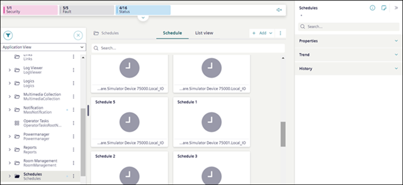

Schedules Workspace - Tile View
Schedules are located in the Application View under Applications > Schedules.

In System Browser:
- When you select Schedules, the Schedule tab displays all the related schedule objects such as BACnet schedules, BACnet calendars, Management Station Schedules, and Management Station Calendars in a tile view.
- When you select a particular sub folder, the Schedule tab displays all objects present in that sub folder.
- When you select a scheduler or calendar, the details of the selected scheduler or calendar display in the Schedule tab.
You can add new Management station scheduler and Management station calendar from the Add option. This option is available only if the Schedules extension is installed. The Add option is not available when you select the BACnet schedules or BACnet calendars folder from the System Browser.
You can also search for existing schedulers or calendars from the tile view.